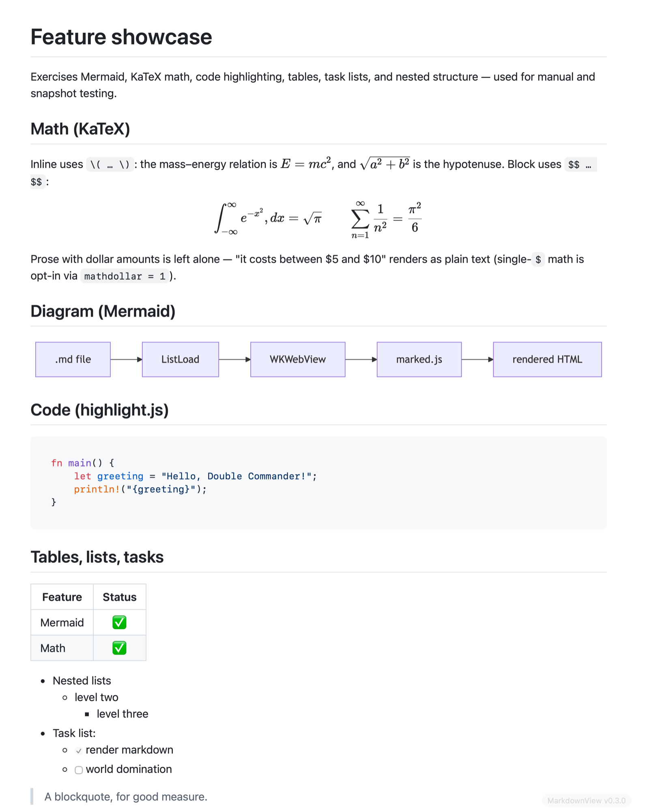

.md rendered in Double Commander's viewer — KaTeX math, a Mermaid diagram, highlighted code, and tables, all from one plugin.Two small, fast, native plugins that fill real gaps in Double Commander on macOS. Each is a universal binary (Apple Silicon + Intel), built with no third-party libraries and no network access, and tested against the real built artifact. They use the Total Commander plugin ABI, so they load straight into Double Commander.
MarkdownView WLX · lister
A Markdown preview/viewer plugin for Double Commander on macOS. Select any .md file and press F3 — it opens beautifully rendered instead of as raw text (as shown above), and you can switch back to plain text any time.
- GitHub-style rendering, syntax highlighting, tables & task lists (GitHub Flavored Markdown)
- Mermaid diagrams and KaTeX math (loaded only for files that use them)
- Automatic light/dark theming; relative images; scroll position preserved across files
- Content is sanitized (DOMPurify) before rendering — safe on untrusted files
MediaInfo WDX · content
See image and video resolution (and more) in a Double Commander column. The bundled QuickLook preview never shows pixel dimensions; this content plugin adds them — plus durations, codecs, and PDF page counts — right in the file listing and tooltips. One adaptive Summary column covers every file type:
- Images: dimensions, megapixels, DPI, bit depth (via ImageIO — header read only)
- Audio/video: duration, bitrate, sample rate, channels, codecs (AVFoundation)
- AVI: resolution, duration, frame rate (self-contained RIFF parser)
- PDF: page count. Every field is also available as its own sortable column.
Install
Download the latest release bundle (no Xcode needed), unzip, quit Double Commander, then run the installer:
./install.shOr build from source — see each plugin's README. Double Commander is ad-hoc signed with no library validation, so the ad-hoc-signed plugins load cleanly.
Built in the open
This is also a worked example of native macOS plugin development: prove the platform mechanism with a focused test before writing the feature, and fix root causes. The wiki documents the WLX/WDX plugin ABIs and a couple of instructive, host-dependent bugs — why WKWebView swallows the Escape key in a Lazarus/LCL host, and why FP-exception traps in that host turn harmless ImageIO math into a crash.